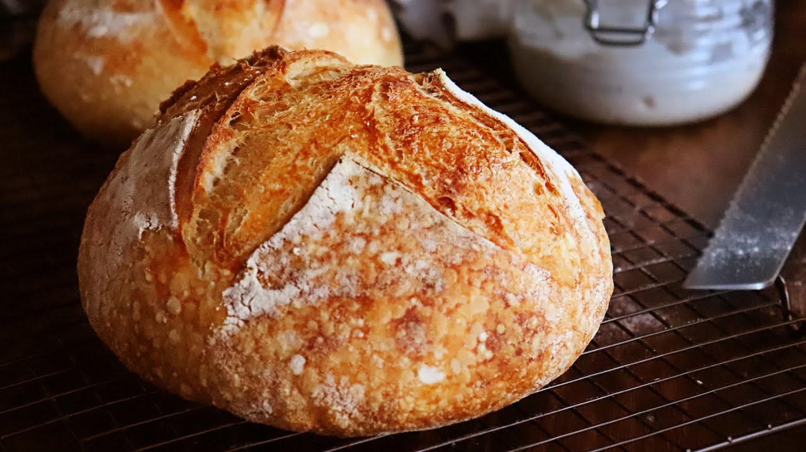
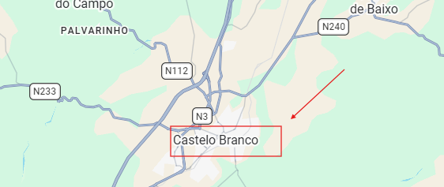

Nuestro Proceso Artesanal
🌾 1. Molienda
🥣 2. Amasado
⏳ 3. Reposo
🔥 4. Horno
Panadería Tradicional

Pan de Masa Madre
Ingredientes: Harina de trigo ecológica, agua, masa madre natural y sal marina.
Elaboración: Fermentación lenta de 24 horas y horneado en suelo de piedra.
Pastelería y Bollería

Cruasán Artesano
Ingredientes: Harina de fuerza, mantequilla pura, azúcar y levadura.
Elaboración: Hojaldrado a mano con múltiples capas y horneado hasta dorar.
Empanadas Caseras

Empanada de Atún Gallega
Ingredientes: Masa de pan crujiente, sofrito de cebolla, pimientos y atún.
Elaboración: Relleno tradicional horneado lentamente.
Dónde Encontrarnos
📍 Dirección: Av. de la Raya, S/N - Frontera Hispano-Portuguesa
📞 Teléfono: +34 900 000 000
✉️ Email: migas_amigas@gmail.com
🌐 Facebook: /migasamigas
📸 Instagram: @migas_amigas

Frontera España - Portugal